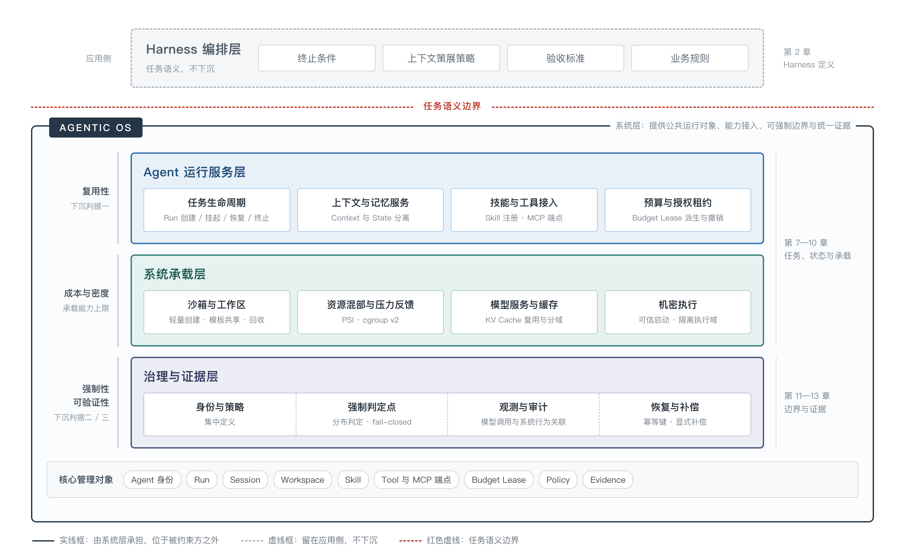

第 30 章 从 Agentic Application 到 Agentic OS¶
当同一家企业同时运行多个 Agent、使用多种框架、服务多个租户时，前面每一篇提出的工程要求都会在每个应用里被重复实现一次，且实现方式互不一致。这类重复不是某个应用的实现缺陷，而是缺少一个位于应用之下、被所有 Agent 共享的层。
本篇回答的是：哪些能力应该从应用层下沉到系统层，以及下沉之后可能长成什么形态。我们把这一形态称为 Agentic OS，同时明确它现在还不是一个已经存在的产品类别，也不必然对应一个新的内核；它更接近一组正在成形的系统职责。
30.1 全书回顾：Agentic Application 已经确立的架构共识¶
30.1.1 五项结论¶
前六篇的技术细节各异，但收敛到五项相对稳定的结论，它们也是本章后续讨论的前提。
第一，架构对象是系统，不是一次模型调用。第 1 章将 Agent 拆解为 Model 与广义 Harness，第 2 章进一步把模型之外的工程系统划分为业务与应用层、Agent 构建与编排层、生产运行层、治理和控制层与调优层五个能力责任域。这一划分的意义在于责任归属：模型升级不应变成应用重构，任务语义不应与基础设施强绑定。
第二，任务是需要被长期管理的对象。第 4 章的任务状态机、第 5 章的 Session 与 Task State、第 7 章的长时任务与会话亲和、第 8 章的 Checkpoint 与状态分层，处理的是同一件事：一个 Agent 任务的生命周期长于一次请求、宽于一个进程、可能跨越多个副本与区域，因此它的状态必须外置，且必须可以被暂停与恢复。
第三，能力是动态接入的，能力发现与执行授权必须分开。第 5 章的 Skill、第 6 章的工具与 MCP、第 9 章的 MCP Gateway 与 Registry 共同说明：模型知道某个工具存在，与模型有权执行该操作，是两件必须分别设计的事。
第四，自主性必须与权限、可撤销范围和可验证性匹配。第 7 章的沙箱与工作区隔离、第 9 章的统一治理与审批、第 14 章的身份安全与出站控制，反复强调同一判断：授予的自主权越大，影响半径越大，与之匹配的边界与证据要求也越高。
第五，证据是变更能否发布的前提。第 13 章的 Trace 与指标体系、第 16 章的行为生成与质量验证、第 21 章的黄金数据集、第 22 章的 Badcase 评估与修复闭环，共同构成一条要求：任何一次 Agent Release，无论改动的是 Prompt、Skill、工具、模型还是 Harness，都需要以可复现的评估结果作为发布依据。这也是本书“生产事实驱动改进”的落点。
30.1.2 六类跨章节反复出现的工程约束¶
上述结论在单个应用内是可以落地的。困难出现在组织层面：当同一家企业同时运行多个 Agent、使用多种框架、服务多个租户时，下面六类约束会在每个应用内被重复实现一次，并且实现方式互不一致。
约束一：任务缺少统一的标识与状态归属。 第 4、5、7、8 章分别定义了任务、会话、工作区与 Checkpoint，但各框架对“一次运行”的语义并不相同：有的以会话为单位，有的以图执行为单位，有的以进程为单位。跨框架汇总成本、排查故障或统一限流时，第一步往往是把不同来源的运行对象强行对齐。
约束二：执行环境成为一等资源，其成本决定并发经济性。 第 7 章讨论沙箱与工作区，第 8 章讨论扩缩容。当 Agent 任务在模型等待、数据检索与工具执行之间交替时，单个任务的平均资源占用与瞬时峰值差距很大，且多个任务可能同时结束等待、集中启动工具。按峰值为每个任务预留资源会留下大量空闲配额，按平均值部署则会在集中编译、测试或读取数据时产生拥塞。环境的创建、空载占用、暂停恢复与销毁成本，直接决定了平台能支撑多少并发任务。
约束三：能力元数据不足以支撑自动化决策。 第 6 章要求工具描述包含输入、输出与错误状态，但生产中真正稀缺的是三类声明：该操作是否有外部副作用、是否幂等、失败后是否可安全重试。缺少这三类声明，重试与补偿只能靠人工约定，第 23 章的自动修复闭环也难以覆盖写操作。
约束四：上下文与状态的边界容易被侵蚀。 第 5 章明确区分 Context 与 State，但在工程实现中，压缩、摘要与续行会不断把“不完整的对话历史”当成“可恢复的任务事实”。这一问题在单应用内可以靠代码规范控制，跨框架接入时则缺少强制手段。
约束五：授权难以随任务派生与收回。 第 9、14 章要求最小权限与短期凭证。但 Agent 任务会派生子任务、子 Agent 与后台调用，授权需要随之派生，并在任务终止时级联收回。当身份、权限收回与执行中止分散在应用代码、Gateway 配置与运行时策略中时，“任务已终止”与“该任务的凭证已失效”并不总是同时成立。
约束六：证据的采集点分散，口径不统一。 第 13、21 章要求统一指标口径与评估基线，但采集点分布在模型调用、工具调用、状态变更与审批环节。当这些采集由各应用自行埋点时，跨应用的成本核算、故障定位与质量回归都缺少可比性。
这六类约束的共同特征是：它们都不是某个应用的实现缺陷，而是缺少一个位于应用之下、被所有 Agent 共享的层。它们构成了本章讨论 Agentic OS 的问题域。
30.2 从应用架构到系统层：什么应该下沉，什么不应该¶
30.2.1 三条下沉判据¶
并非所有共性能力都应该下沉。把任务语义、业务规则或评估口径塞进系统层，只会得到一个更难替换的框架。本书提出三条判据，一项能力只有同时满足判据一，且至少满足判据二或判据三，才具备下沉到系统层的理由。
判据一是复用性： 多个应用会重复实现该能力，且实现方式差异不产生业务价值。工作区快照、沙箱创建、Trace 采集属于此类；任务的终止条件与验收标准不属于此类。
判据二是强制性： 该能力必须由被约束方之外的组件执行，才能真正生效。权限校验、网络出站控制、预算上限、审计记录属于此类。如果一项约束只写在提示词里，或者由被约束的 Agent 自己调用，它就不是强制的。
判据三是可验证性： 该能力需要独立于执行方的证据来源，才能被采信。模型调用与系统行为的关联观测、工作区状态的独立校验、评估结果的可复现性属于此类。由 Agent 自行上报的执行结果不构成独立证据。
按这三条判据回看 30.1.2 的六类约束：约束二、五、六同时满足复用性与强制性或可验证性，属于应当下沉的部分；约束一与约束三是接口与元数据的标准化问题，需要跨厂商约定，而不是由某一层独占实现；约束四则介于两者之间，其边界规范可以下沉为运行服务的接口约定，但具体的上下文策展策略仍应留在应用侧。
30.2.2 Agentic OS 的定义与边界¶
据此，本书对 Agentic OS 给出一个窄定义：
Agentic OS 是为 Agent 任务提供公共运行对象、公共能力接入、可强制边界与统一证据的系统层。它以任务、环境、能力、授权与证据为核心管理对象，不持有任务语义。
这个定义包含三条否定，它们与定义本身同样重要。
第一，Agentic OS 不替代 Harness。第 2 章界定的 Harness 编排层决定模型看到什么、能调用什么、什么时候停止、结果如何验收，这些属于任务语义，应留在应用侧。系统层提供的是任务对象的生命周期管理，而不是任务该怎么做。
第二，Agentic OS 不等于又一个 Agent 框架。框架通过 SDK 约束开发方式，系统层通过接口与强制点约束运行行为。二者的区别在于：框架的约束在不使用该框架时即失效，系统层的约束应在被约束方不配合时仍然成立。这一区别在第 11 章的异构 Agent 接入场景中尤为关键。
第三，Agentic OS 不必然意味着修改内核。下沉的目标是让能力位于被约束方之外，而不是位于尽可能低的层次。同一项能力可以由平台控制面、宿主运行服务、容器运行时或内核机制提供，选择取决于强制性与成本，而不是层次高低。这与第 2 章“最低充分架构”的取舍标准一致：能力放在哪一层，取决于它在该层能否真正生效，而不取决于它听起来是否更底层。
30.2.3 与 AI 操作系统四种产品形态的关系¶
在操作系统产品侧，人工智能带来的变化通常被划分为四种形态：交互层重构、内核与服务增强、功能层融合、底层架构颠覆。这一划分以系统职责和实现机制的变化为依据。本书讨论的 Agent Platform 与其中的第二、第三类直接相关，理解这一对应关系有助于判断哪些能力已有工业实现基础。
| 形态 | 核心变化 | 典型交付物 | 与本书内容的关系 |
|---|---|---|---|
| 交互层重构（系统之外） | 独立助手或代理通过既有接口使用 OS | 命令行助手、计算机操作 Agent | 对应第 6 章的环境接口与 Computer Use，宿主不做改动 |
| 内核与服务增强（系统之内） | 按 AI 与 Agent 负载改进内核、驱动与运行服务 | 异构适配、缓存管理、沙箱承载优化 | 是第 7、8、9 章能力的承载基础，决定并发成本上限 |
| 功能层融合（系统之内） | 模型、上下文与工具调用融入系统功能与任务流程 | 系统智能服务、系统级 Agent、任务管理 | 与第 9、10 章及第四篇的平台控制面职责高度重叠 |
| 底层架构颠覆 | 计算、执行、保护或状态管理的基础机制重构 | 原生内核、专用执行域、研究原型 | 对应 30.7 的开放问题，尚无成熟通用实现 |
表 30-1 AI 操作系统四种产品形态与本书内容的对应关系
表 30-1 说明了一个容易被忽略的事实：Agentic OS 并不是从零开始的构想，而是两条已经在推进的演进线在同一组对象上会合。
自上而下的一条线是平台能力下沉。第 9 章与第四篇描述的 Gateway、Registry、身份与策略、任务与配额管理，在操作系统产品侧表现为功能层融合：模型服务、上下文服务、系统工具接口与任务状态管理成为系统提供的公共能力。openEuler Intelligence 将本地知识库、语义接口、MCP 服务与运维工作流集成为系统智能服务；Red Hat 通过 RHEL MCP Server 把系统诊断工具开放为可调用能力（开发者预览）；Microsoft 则将 Agent 的独立标准账户与 Agent workspace 纳入系统功能（相关 Copilot Actions 为实验预览）。这些实践的共同点是把原本由每个应用自建的能力变成系统接口。
阿里巴巴开源的 ANOLISA 是这条线上组织方式最接近本章讨论对象的一个实例，因此本章在后续几节中反复引用它。它把自身定位为面向 Agent 负载的操作层，按三个域组织能力：Agent 入口（cosh-ng 终端、OS Skills 系统与运维技能、ktuner 内核调优）、上下文效率（Token-less 工具输出压缩、Agent Memory 跨会话记忆、AgentSight 轨迹与 Token 可见性）、运行与安全（ws-ckpt 检查点与回滚、SkillFS 技能视图、Agent Sec Core 沙箱与校验、Blaze 沙箱生命周期）。值得注意的是它的边界声明：明确保留使用者已有的 Shell、Agent 框架与沙箱，各项能力可独立启用。这一取舍与 30.2.2 的第二、第三条否定一致——它不要求换框架，也不要求换内核，而是在既有 Linux 底座上补一层。需要同时说明成熟度：截至 v1.1（2026-08-08），除 copilot-shell 外的组件多处于 0.x 版本，能力仍在演进，本章引用它是作为组织方式的样本，而不是作为已经稳定的实现基线。
自下而上的一条线是系统承载增强。第 7、8 章讨论的沙箱成本、资源争用与恢复能力，在操作系统产品侧表现为内核与服务增强：轻量创建、模板预热、写时复制、按需加载、空闲回收，以及基于压力反馈的资源调节。Linux 的 PSI 与 cgroup v2 提供了资源等待观测与配额调整的基础机制，CPU 厂商也已将 Agent 沙箱密度与批量创建吞吐列为明确的产品场景。这条线不改变应用的调用方式，只改变同等服务质量下能承载的任务数量与单位成本。
两条线会合的位置，正是 30.1.2 中约束二、五、六所指向的对象：环境、授权与证据。这也是本书认为 Agentic OS 的雏形最先成型的地方。
需要同时指出，第四类形态在当前阶段仍以研究为主。现有公开工业实践尚不足以确立成熟的通用 AI 原生操作系统，专用执行域与系统研究提供的是探索方向，而不是可直接采用的架构。这一判断限定了本章后续所有“雏形”讨论的确定性边界。
也正因如此，当前接近 Agentic OS 的工业实现更准确的归类是“第二类与第三类的组合”，而不是第四类。它们在既有 Linux 底座上扩展 Agent 运行时与控制面，用系统机制提供强制与观测，但不重构计算、执行或状态管理的基础机制。本章讨论的三层结构描述的就是这种组合形态；把它称作“操作系统”，指的是职责归属，不是实现层次。
30.3 Agentic OS 的架构雏形¶
30.3.1 核心管理对象¶
操作系统的形态由其核心管理对象决定。传统操作系统管理进程、地址空间、文件与设备；Agentic OS 若要成立，必须能说清它管理的是什么。表 30-2 给出本书归纳的九类对象。表中“既有系统中的近似物”一列用于说明这些对象目前是如何被间接表达的，最后一列说明缺少该对象时会出现什么问题。
| 管理对象 | 语义 | 生命周期 | 既有系统中的近似物 | 缺失时的后果 |
|---|---|---|---|---|
| Agent 身份 | 可被授权、可被审计的执行主体 | 长于单次任务 | 服务账号、独立标准账户 | 无法区分 Agent 与用户的操作责任 |
| Run（任务运行） | 一次有目标、可暂停、可恢复的执行 | 分钟到数天 | 进程组、作业、工作流实例 | 跨框架无法统一计量、限流与排障 |
| Session | 交互与上下文的连续性载体 | 与 Run 交叉，不等价 | 会话、连接 | 上下文历史被误当作任务事实 |
| Workspace | 任务可读写的文件与制品空间 | 随 Run 派生与回收 | 目录、卷、容器层 | 并发任务互相污染，失败后无法回退 |
| Skill | 可复用、可发布、可校验的行动方法 | 独立版本化 | 脚本、软件包 | 能力沉淀不可审计，也无法回滚 |
| Tool 与 MCP 端点 | 可发现、可调用的外部能力 | 独立注册与授权 | 系统调用、API、服务 | 能力发现与执行授权混同 |
| Budget Lease（预算租约） | 有上限、有期限、可收回的资源与调用额度 | 随 Run 派生，可级联撤销 | 配额、cgroup 限额 | 预算失控，且子任务无法被约束 |
| Policy | 可强制执行的边界声明 | 集中定义，分布判定 | 访问控制、seccomp、网络策略 | 约束只存在于提示词中 |
| Evidence（证据） | 计划、已发出操作与已确认结果的记录 | 长于 Run，供审计与评估 | 日志、审计记录 | 无法证明变更改进，也无法安全重试 |
表 30-2 Agentic OS 的核心管理对象
其中三个对象值得单独说明，因为它们与传统操作系统对象的差异最大。
Run 与进程不是同一层次的对象。一个 Run 可能跨越多个进程、多个副本、多个区域，也可能在中途长时间挂起等待人工审批。它的正确性依据不是“进程是否存活”，而是“任务事实是否完整且一致”。这解释了为什么第 8 章要求状态外置：Run 的身份必须独立于承载它的执行实例。
Budget Lease 是本书认为最容易被忽略、但对可控自治最关键的对象。第 9 章讨论配额，第 14 章讨论最小权限，两者在实现上通常是分离的。租约模型把它们合并为同一件事：一次授权同时限定可用资源、可执行操作、有效期限与撤销方式，并可随子任务派生。缺少这个对象时，“终止任务”与“收回该任务的全部权限”只能靠多处配置协同保证。
Evidence 必须区分三种状态：计划中的操作、已发出的操作、已确认结果的操作。这一区分直接决定恢复策略。以“修改配置后重启远程服务”为例，恢复本地工作区文件并不会把远程服务恢复到原状态；若之前的调用已经发出但结果未返回，直接重试还可能重复产生影响。因此工作区快照只能恢复其覆盖的文件状态，跨系统的副作用需要依靠操作记录与实时查询决定是否重试或补偿。
30.3.2 三层结构¶
按照 30.2.1 的判据，这九类对象的管理职责可以组织为三层。

图 30-1 Agentic OS 的三层结构与责任边界
图 30-1 表达的是三层之间的责任边界，而不是调用顺序。三层各自对应一条不同的判断标准：上层解决复用性，中层解决成本与密度，下层解决强制性与可验证性。图中实线框表示由系统层承担、位于被约束方之外的职责，虚线框表示留在应用侧、不随系统层下沉的部分，红色虚线表示任务语义边界。上层与应用侧 Harness 编排层之间的这条边界是本章最重要的一条——它标记的是任务语义不下沉。
Agent 运行服务层承担任务对象的生命周期管理。它提供 Run 的创建、挂起、恢复与终止，提供 Session 与 Workspace 的派生与回收，提供上下文、记忆与技能的读写接口，并在这些操作上绑定预算租约。这一层的接口对象是任务与状态，而不是函数调用细节。研究侧已有对应探索：AIOS 将模型调度、上下文、记忆、存储与访问控制抽取为多个 Agent 共享的公共服务，其 kernel 位于宿主内核之上；IBM 研究团队在《Towards an Agent Operating System》中借鉴经典操作系统与云平台，讨论生命周期、工具调用、上下文、记忆、授权与恢复等基础能力，强调由平台统一管理动态执行中的公共规则。
工业侧的 ANOLISA 以系统组件形式提供了这一层的多数能力：Agent Memory 承担跨会话记忆，SkillFS 控制当前可见的技能视图并保留其余技能的可发现性，ws-ckpt 为工作区变更保留恢复点，Token-less 压缩进入模型的工具 schema 与工具响应。其中 Token-less 的放置方式值得单列：压缩发生在 Agent 与模型之间，不需要修改 Agent 框架代码，被丢弃的数组项通过标记保留可检索性，使压缩可逆。按 30.2.1 的判据看，这是一次典型的合格下沉——多个框架会重复实现同一件事（复用性），而放在调用路径上而非框架内部使它无需被约束方配合（强制性）。它也提示上下文成本本身可以是系统层的优化对象，而不只是应用侧的提示词技巧。
系统承载层决定同等服务质量下的成本与密度。它负责沙箱与工作区的轻量创建、模板共享与及时回收，负责按任务活跃状态分配容量，负责模型服务与缓存的数据路径，并在需要时提供机密执行环境。ANOLISA 中的 Blaze 管理沙箱生命周期，ktuner 负责内核参数调优，属于这一层的两类典型职责。这一层的收益不体现为新功能，而体现为承载量、启动与恢复时间、尾延迟与资源成本。需要注意其代价：模板共享、暂停恢复与动态调节本身都有开销，集中唤醒可能造成争用，过度回收会拖慢恢复，因此部署密度受任务完成时间、尾延迟与相邻任务干扰共同约束，单纯增加沙箱数量可能使整体服务质量下降。
治理与证据层决定任务是否被允许发生，以及事后能否被证明。它集中定义身份、策略与授权，在请求路径上分布判定点，采集模型调用与系统行为的关联证据，并提供恢复与补偿所需的操作记录。这一层的实现方式在工业界已有多种形态：NVIDIA OpenShell 在 Agent 之外设置独立的执行控制，通过沙箱、声明式策略、Landlock、seccomp 与网络代理管理文件、网络与进程访问（文档标注 alpha 状态，部分控制具有兼容降级配置）；Windows 365 for Agents 则将按任务分配的执行环境与任务生命周期结合，任务结束后重置环境。
ANOLISA 在这一层提供了两个可以对照表 30-2 的具体机制。AgentSight 在 Linux 上基于 eBPF 观测 Agent 行为，不要求修改 Agent 代码，把用户输入、模型调用、工具调用、Token 消耗与子 Agent 分支关联在同一视图中——这正是 Evidence 对象所要求的“独立于执行方的证据来源”。Agent Sec Core 的 Skill Ledger 则给 Skill 对象补上了状态机：已签名的技能发生变化时，Agent 在再次使用前报告 drifted，重新扫描会把阻断性发现记为 deny。这个例子说明表 30-2 中“Skill 可校验”不是一句形容词，它需要签名、漂移检测与阻断状态这三样东西同时存在才成立。
30.3.3 与既有系统的职责分界¶
三层结构并不要求全部由操作系统提供。判断某项能力应由平台还是宿主承担，可以回到 30.2.1 的判据，并补充一条工程约束：跨层调用的成本不应超过它所换取的强制性收益。
倾向由宿主与内核提供的能力包括：沙箱与工作区的创建与回收机制、基于压力反馈的资源调节、进程与网络的强制隔离、可信启动与机密执行、以及以 eBPF 等机制实现的低干扰观测。这些能力的共同特征是必须位于被约束方之外，且无法通过应用层协作达成。
倾向由平台控制面提供的能力包括：Run 与 Session 的语义定义、评估口径与准入基线、审批流程、跨租户的配额与成本核算、以及技能与工具的注册与版本管理。这些能力需要与组织流程对齐，且需要在多种宿主环境上保持一致。
需要明确留在应用侧的是任务语义：终止条件、上下文策展策略、验收标准与业务规则。第 2 章已指出，一旦编排层直接依赖某个 Runtime 的内存结构，编排层与 Runtime 的解耦就已经被破坏。同理，一旦系统层开始规定任务该如何完成，它就从操作系统退化为框架。
30.4 模型、Harness、协议与运行时的解耦¶
30.4.1 四个解耦面¶
Agentic OS 能否成立，取决于四个解耦面上是否存在稳定接口。所谓稳定接口，指的是可以在不重写任务语义的前提下替换实现，并用同一套评估证明替换前后的能力等价。
| 解耦面 | 稳定接口的对象 | 已相对收敛的部分 | 尚未收敛的部分 | 破坏解耦的典型做法 |
|---|---|---|---|---|
| 模型与 Harness | 请求与响应格式、工具调用协议、结构化输出 | 工具调用与结构化输出的接口形态 | 长上下文中的指令遵循与多步稳定性无法用协议表达 | 把补偿模型缺陷的提示词与循环控制固化进业务代码 |
| Harness 与运行时 | Run、Session、Checkpoint、Workspace 的状态语义 | 状态外置的必要性已成共识 | 各框架对“一次运行”的定义不一致 | 编排层直接依赖某个运行时的内存结构或进程模型 |
| 能力与协议 | 工具描述、能力发现、调用与错误语义 | MCP 已承担工具发现与调用协议的角色 | 副作用、幂等性与风险等级缺少可机读声明 | 用协议兼容代替权限设计，把“能发现”当成“可执行” |
| 运行时与承载环境 | 沙箱契约、文件与网络边界、快照与恢复接口 | 多后端可配置已有实践 | 快照语义与跨系统副作用的关系未标准化 | 假定内部快照可以撤销外部副作用 |
表 30-3 四个解耦面的接口现状
第一个解耦面上，接口形态相对成熟，但存在一个必须防范的失败模式：协议兼容不等于能力等价。第 2 章已指出，降级模型可以在协议层正常返回工具调用，却在多步任务中丢失中间约束，最终产生一次结构合法而结果错误的执行。这意味着模型替换的验证只能通过完整 Harness 的回归评估完成，不能通过接口测试完成。
第二个解耦面上，共识已经建立但语义尚未统一。这正是 30.1.2 约束一的来源，也是标准化最直接的对象。
第三个解耦面上，MCP 解决了工具发现与调用的协议问题，但权限仍需由客户端、服务端与宿主系统分别实施。这一点在操作系统侧也有相同表现：把系统工具开放给 Agent 时，需要进一步完善操作名称、输入参数、返回结果与错误状态的描述，Windows App Actions 让应用声明可复用操作及其输入输出与内容类型，服务器侧则通过 MCP 服务与结构化命令统一日志查询、服务管理与诊断工具的调用参数与结果格式。接口描述越清楚，模型越容易选择工具并判断操作是否完成。但描述清楚不等于授权正确，这两件事必须分别设计。
第四个解耦面上，运行后端的可替换性已有实践，例如 OpenSandbox 提供环境生命周期接口并支持配置 gVisor、Kata 等运行后端。真正缺失的是快照语义的边界声明：内部快照能恢复什么、不能恢复什么，需要成为接口的一部分，而不是使用方的默认假设。
30.4.2 解耦的代价¶
解耦不是免费的，它把复杂度从代码转移到了版本组合与验证上。
第一项代价是版本组合矩阵。当模型、框架、协议实现、运行时与硬件驱动可以独立演进时，可用组合的验证与维护成本随之上升。操作系统产品侧对此已有明确取舍：NVIDIA 围绕 DGX 硬件维护驱动、通信与操作系统的配套关系，并列出硬件与最低软件版本；Red Hat 把快速硬件适配与企业 Linux 维护分开安排，其中面向新硬件的专用组件采用持续升级方式，仅支持最新版本，不沿用标准发行版的长周期生命周期，也不保证版本间向后兼容。这类安排说明，“可支持的组合、支持周期与升级路径”本身就是交付能力的一部分。企业在设计 Agent Platform 时面临同类问题，只是对象换成了模型版本、框架版本与协议版本。
第二项代价是隐式行为变更。系统或模型更新可能在不改变接口的情况下改变输出行为。Apple 在其 Foundation Models 的更新说明中提醒开发者，在系统更新带来模型变化后重新验证提示词行为。这一提醒的意义超出桌面场景：它说明兼容性讨论已经从传统 API 扩展到模型版本与输出行为，而后者无法用接口签名描述，只能用评估集覆盖。
第三项代价是评估成本。要证明替换前后能力等价，需要在相同负载、相同权限与相同服务目标下运行同一套评估。这把第 21、22 章的评估体系从“质量保障手段”提升为“解耦的前提条件”：没有可复现的评估，解耦只是把风险从设计阶段推迟到生产阶段。
因此本书对解耦给出的判据是：一项解耦是否成立，不取决于是否存在接口定义，而取决于是否能在不重写任务语义的前提下完成替换，并用同一套评估证明替换后的行为在可接受范围内。
30.5 Agent Platform 的标准化与生态化¶
30.5.1 需要标准化的六类接口¶
标准化的对象应当来自多家产品的共性问题，而不是某一实现的内部结构。按前面几节的分析，当前具备标准化条件的有六类接口。
任务与运行对象模型。 需要约定 Run、Session、Checkpoint 与 Workspace 的语义、状态机与相互关系，特别是“一次运行”的边界。它直接决定跨框架的计量、限流、排障与成本核算能否统一。
身份与授权。 需要约定 Agent 身份的表达、委派链的传递与验证、租约的授予与撤销语义。跨组织协作场景下，这一类接口的缺失会使责任归属无法确定。
能力描述与发现。 需要在现有工具描述之外，补充副作用、幂等性、风险等级与前置条件的可机读声明。本书认为这是当前最欠缺、且收益最直接的一类元数据：它决定重试与补偿能否自动化，也决定审批策略能否按风险分级而不是按工具名单配置。
可观测事件语义。 需要约定模型调用、工具调用、状态变更与审批四类事件的最小字段与因果关联方式，使跨厂商的 Trace 可以合并分析。
评估与指标口径。 需要约定数据集组织、评估器接口、指标定义与门禁表达，使不同产品的评估结果具备可比性。
执行环境契约。 需要约定工作区、快照、网络出站、文件与进程边界的声明方式，以及快照能够恢复与不能恢复的范围。
30.5.2 标准化的形成机制¶
标准化不是先写规范再等实现，而是从多方实现中提炼共性。操作系统领域已有三种可借鉴的机制。
第一种是上游贡献。龙芯将矩阵乘法、卷积、转置等核心算子的向量优化提交到 ONNX Runtime 上游，从 1.17.0 版起由上游原生支持。其价值在于减少各发行版重复适配与长期维护独立补丁的成本。对 Agent 生态而言，对应做法是把通用的运行对象与观测语义推入被广泛使用的开源实现，而不是维护各自的私有扩展。
第二种是多方共建。Mooncake 由高校与多家企业共同开发，参与方包括清华大学、月之暗面、阿里云、华为存储等；龙蜥社区的 SysOM 则通过社区组件支持不同产品的运维集成。这类项目的特征是企业负责具体产品的适配与交付，社区协作提供可共享的源码、接口与开发工具。
第三种是可复现测评。厂商、开源社区与测评机构可以结合不同实现制定测试方法，在相同负载、权限与服务目标下评价性能、功能与安全，形成可互操作、可复现的要求。这一机制对 Agent 生态尤其重要，因为 Agent 系统的收益高度依赖任务分布与权限设置，脱离这些条件的指标缺少可比性。
ANOLISA 对 Token-less 效果的披露方式提供了一个可参照的口径样本。它区分两类数据：一类是组件级基准，分别给出工具响应、工具 schema 与全链路的压缩率及处理耗时；另一类是单次观测值，说明在某个编码任务中节省了约 31.7 万 Token（约 40.5%），并由 AgentSight 测得。更关键的是它同时声明了三条边界：节省只作用于进入上下文的工具响应，不等于整场会话账单；结果随负载变化；效果估算方法另有文档说明。本书认为这种“数字 + 适用范围 + 测量来源”的三段式披露，应当成为 Agent 相关效能指标的默认口径。反过来说，缺少适用范围与测量来源的单一百分比，无论数值多高，都不具备跨实现比较的价值。
30.5.3 从“能跑”到“可互操作”¶
生态化可以分为三个递进层次，用于判断某个方向的标准化进展到了哪一步。
第一层是协议兼容：不同实现可以互相调用。MCP 在工具接入上已达到这一层。
第二层是语义一致：相同调用在不同实现上产生相同的可观察后果，包括错误分类、重试语义与状态变更范围。这一层目前普遍未达到，副作用与幂等性声明的缺失是主要原因。
第三层是证据可比：不同实现的运行记录与评估结果可以放在同一口径下比较。达到这一层，企业才能真正实现多来源 Agent 的纳管与替换。
需要提醒的是，标准化不应先于共性问题的收敛。过早把当前实现固化为规范，会把某一阶段的工程折中变成长期负担。在语义尚未清晰的领域，更务实的做法是先约定可观测字段与声明格式，让不同实现的差异变得可以被度量，再讨论行为标准。
30.6 从可靠执行到可控自治¶
30.6.1 自治阶梯¶
第 4 章讨论可靠性与完成验证，第 6 章讨论权限与审批。把两者放在一起，可以得到一条自治阶梯。它的作用不是鼓励尽快向上走，而是明确每一级必须同时具备的边界与证据。
| 级别 | 系统行为 | 新增的边界要求 | 新增的证据要求 |
|---|---|---|---|
| L1 建议 | 生成命令或方案，由人执行 | 无需执行权限 | 建议内容可追溯 |
| L2 单步获准执行 | 每次变更前请求批准 | 操作与资源一一对应的授权 | 每次执行的输入、输出与批准记录 |
| L3 有界自主 | 在限定资源、预算与操作集内连续执行 | 预算租约、工作目录限定、读写分离 | 完整调用轨迹与预算消耗 |
| L4 长任务自主 | 跨会话长期执行，可暂停与恢复 | 可级联撤销的授权、可回退的工作区 | 计划、已发出操作与已确认结果的区分 |
| L5 组织级自治 | 跨系统、跨团队委派与协作 | 可验证的委派链、跨域强制点 | 跨组织可审计的责任归属证据 |
表 30-4 自治阶梯与对应的边界与证据要求
表 30-4 隐含一个判断：自治程度的上限不由模型能力决定，而由可撤销范围与可证明范围决定。当一项操作既不能撤销，也不能证明其结果，那么无论模型多可靠，把它交给自主执行都缺少工程依据。
30.6.2 强制边界与观测边界¶
在纳管多来源 Agent 时，最容易出现的表述问题是把“能观测到”说成“能控制住”。本书建议在架构文档与产品说明中严格区分两类边界。
一项边界只有在满足下列全部条件时，才能称为强制边界：覆盖任务入口、凭证获取、网络与 DNS 访问、文件与进程间通信、子进程创建、原生工具调用、后台任务与子 Agent、以及交互控制台等全部可用路径；在判定组件不可用时采取失败即拒绝（fail-closed）的行为；并且通过负向测试证明绕过尝试确实被拒绝。任何一条不满足，该边界只能称为观测边界，即能够发现越界行为，但不能阻止它。
同理，“只读接入”是一个需要证明的结论，而不是一个可以声明的属性。只有通过“写路径不可达”的负向测试，才能称某个接入是只读的。缺少该测试时，准确的表述是“未观察到写操作”。
这一区分有直接的工程后果。第 11 章讨论异构 Agent 接入时，外部框架、SDK 与第三方 Agent 通常不可修改，平台只能在其外部建立边界。此时接入能力可以分为四类。
外部边界强制：在被接入方之外建立强制点，覆盖已证明的路径集合。需要注意，“已覆盖路径”表达的是已证明的子集，而不是全部路径，且每一项都应有独立的策略来源与独立的采集来源相互印证。
包装器中介：通过替换入口、代理或钩子实现中介，强制性依赖被接入方是否绕过包装器。
仅观测：只能采集行为并事后告警，需通过负向测试确认其确实不具备写能力。
不支持：既不能强制也不能可靠观测，此类路径只应进入治理与认证范围，不应对外声明为受控。
按这四类描述接入能力时，建议同时给出四个维度：该能力是强制属性还是观测属性、覆盖的操作语义、覆盖的执行路径、以及证据质量。这样描述的价值在于，它使“我们已纳管某类 Agent”成为一句可以被检验的话。
ANOLISA 可以用来说明为什么必须逐项标注而不是整体声明。它的 Agent Sec Core 通过 hook 接入 Qoder CLI、Qwen Code、Codex 等外部 Agent 运行时，在提示词、工具调用、技能与输出环节施加策略，按上面的分类属于包装器中介：策略确实在被接入方之外定义，但强制性取决于该运行时是否绕过 hook，因此需要负向测试来界定覆盖范围。它的 AgentSight 基于 eBPF 观测，不要求修改被观测方，证据质量高，但其本身不阻断行为，按分类属于仅观测。同一产品的两项能力落在不同类别，说明“是否受控”不能按产品整体回答，只能按能力、路径与证据分别回答。这也是 30.5.3 中“证据可比”之所以是最难一层的原因。
30.6.3 不可逆操作、补偿与撤销¶
可控自治的最后一块是失败处理。工作区快照解决的是文件状态回退，它不解决跨系统副作用。数据库写入、消息发送、工单创建与远程服务重启在快照之外，不会随内部回滚自动撤销。
因此长任务的恢复需要三样东西配合：区分计划、已发出与已确认三种状态的操作记录；能够识别重复提交的幂等键；以及针对不可逆操作的显式补偿动作。当一次调用已经发出但结果未返回时，正确做法是先查询实际状态，再决定重试或补偿，而不是直接重放。这也解释了 30.3.1 为什么把 Evidence 列为核心管理对象：它不只是审计材料，而是恢复逻辑的输入。
共享状态还带来一类容易被忽视的失效：长期记忆或共享知识中可能保留已经失效的结论。软件更新、配置变更或环境迁移之后，此前正确的结论会变成误导。恢复任务时需要重新查询当前状态，而不是直接采信记忆中的历史结论。第 5 章讨论的资产治理与反退化机制，在系统层的对应要求是记忆服务必须支持更新、删除与访问控制。
此外，模型参与决策后，日志、网页与工具输出既是诊断材料，也可能包含诱导操作的文本。系统需要把这些内容视为待分析的数据，不能据此扩大权限；工具端仍应按调用身份检查可执行的变更。这类风险的性质是新的，但它放大的往往是传统问题：过大的权限、错误的配置与可重复执行的危险操作，在自动执行范围扩大后后果更严重。
30.7 面向下一阶段 AI 原生架构的开放问题¶
以上讨论的都是已有实现或已有明确方向的部分。下面七个问题目前没有公认答案，本书为每一个给出判断进展的标志，以便读者在后续一到两年内自行校准。
问题一：Run 对象应该落在哪一层。 任务对象可以由平台控制面持有，也可以下沉为宿主运行服务，甚至进入执行域的基础机制。判断标志是：是否出现被多个框架共同采用的任务状态语义，且该语义在框架不配合时仍能被宿主观测与约束。
问题二：Agent 身份与委派链如何跨组织传递。 当任务跨越组织边界委派时，身份、授权范围与责任归属需要可验证地传递。判断标志是：是否出现可被独立第三方验证的委派凭证格式，以及配套的撤销机制。
问题三：副作用与幂等性能否成为可机读的能力元数据。 这是自动化重试、补偿与风险分级审批的前提。判断标志是：主流工具协议是否引入副作用与幂等性字段，且运行时确实依据这些字段改变重试行为。
问题四：沙箱与工作区的成本与隔离曲线在 Agent 负载下的最优点。 进程级隔离、应用内核、轻量虚拟机与容器运行时各有不同的启动成本、空载占用与隔离强度。gVisor 通过用户态应用内核处理沙箱应用的系统调用，Occlum 在可信执行区内实现库操作系统，Asterinas 则以 Rust framekernel 架构在保持 Linux ABI 兼容的同时缩小可信基础。判断标志是：是否出现在 Agent 典型负载下同时公开创建吞吐、空载占用、恢复时延与隔离强度的可复现测评。
问题五：共享状态如何做到既复用又不越界。 KV Cache、长期记忆与技能库的复用能显著降低成本，但会把原本局限于单个请求的状态带入共享环境。现有做法是按租户与任务限制访问范围，例如推理服务通过可选的缓存分域参数控制前缀缓存的复用范围，由可信入口把租户身份绑定到相应共享域。判断标志是：分域机制是否成为默认配置而非可选项，以及是否有对应的越权检测手段。
问题六：评估如何从离线数据集走向系统级基准。 当前评估多以任务数据集为对象，而 Agentic OS 的收益体现在承载量、恢复时间、干扰与单位成本上。判断标志是：是否形成在相同负载、权限与服务目标下同时评价质量、成本与安全的公开方法。
问题七：自进化的变更边界。 第 23 章讨论 Trace 到补丁的闭环，其中一个未解问题是 Agent 能否修改自身的 Skill、Prompt 与 Harness，以及在什么证据下允许。判断标志是：是否出现被广泛接受的变更分级与准入规则，使部分自动变更可以在无人审批的情况下发布，同时保留可回滚能力。
这七个问题之外还有一个更基础的问题，即面向 AI 负载的基础机制重构能否成立。研究侧已有具体方向：LithOS 针对机器学习负载重新设计 GPU 资源管理，提出细粒度调度与算子核函数的执行拆分；Agent libOS 在运行时中管理授权上限、预算与操作记录，区分外部调用的准备、派发与结算，以减少恢复时的盲目重放。这些工作的共同特征是把 30.3.1 所列对象直接纳入基础机制，而不是由上层反复映射到既有系统对象。但它们目前都限定在特定范围内，尚未形成通用实现。本书的判断是：这类重构更可能先在专用执行域内被验证，例如代码修改与测试、数据分析、工具执行这类依赖与权限范围明确的任务，再逐步扩大兼容范围。
30.8 本章小结¶
回到本书的起点。第 1 章提出的判断是：模型是认知核心，但可靠性不能寄托于模型本身。前 29 章沿着这一判断，把“模型之外还需要什么”展开为架构设计、构建、运行、治理与调优五个阶段的工程要求。
本章补充的判断是：当同一组织中运行多个 Agent、使用多种框架、服务多个租户时，这些工程要求会从“每个应用各自实现”变为“需要被共享的系统能力”。这一变化正在两个方向上同时发生，一个是平台能力向下沉为系统接口，另一个是操作系统向上承载 Agent 负载。两者会合的对象是任务、环境、授权与证据，本章把它们归纳为九类核心管理对象与三层责任结构，并给出了复用性、强制性、可验证性三条下沉判据。
这也决定了下一阶段的工作重点不在于提出新的架构名词，而在于把已经识别的限制转化为可强制、可验证、可维护的机制。一项能力是否真正成立，判断依据始终是三个具体问题：它能否在被约束方不配合时仍然生效；它的效果能否用独立证据证明；以及它能否在版本演进中被持续维护。Agentic OS 是否会成为一个稳定的产品品类，取决于这三个问题在多少条路径上得到了肯定回答。